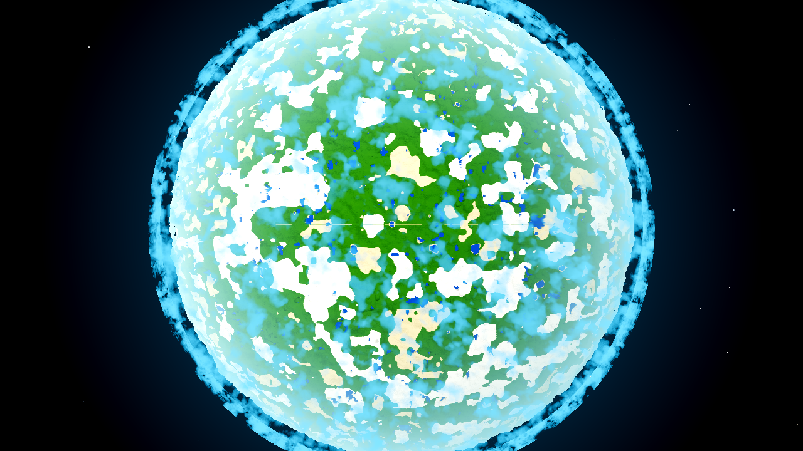
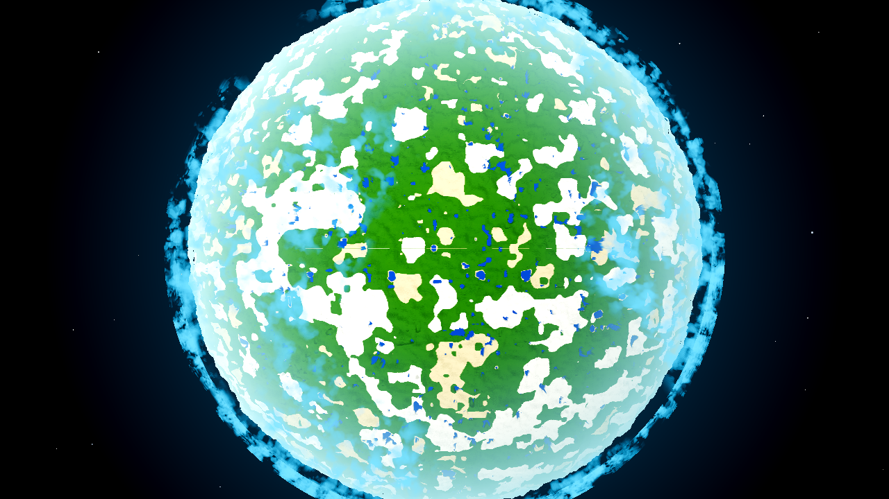
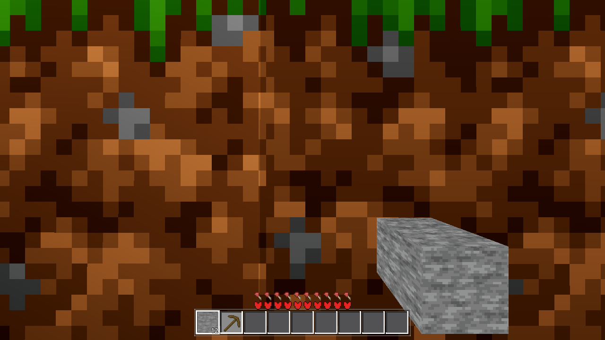
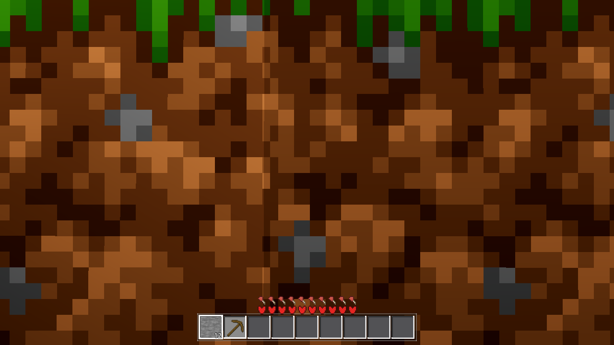
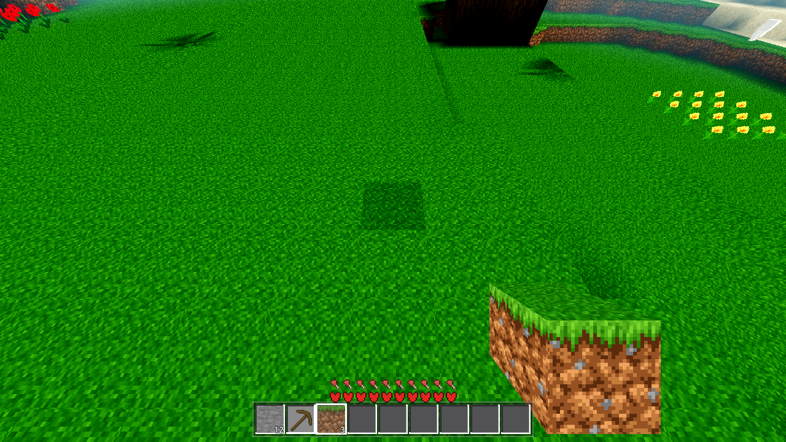
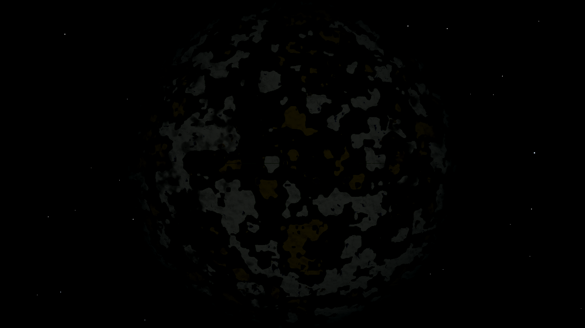

Date: 2026-10-16 · Verdict: 46 settings keys (28 bool switches) + every AWECRAFT_* env
override + every shader-uniform default + every flag-gated code path audited. Exactly two switches ship their
requested fix OFF — both flipped ON: cloud_gate (AC-0428) and viewmodel_occlude (AC-0394).
Every other switch's default is either the user-requested state, a user-reported-defect fix that is already in the
requested state, a debug tool that must not be left on, or an un-asked taste/perf path where OFF is genuinely
conservative. ambient_sky (AC-0426) is the worked precedent — it was re-ruled ON by AC-0432; it is
cited, not re-flipped.
| Switch | What it does | What defect it serves | Was OFF the defect? | Decision |
|---|---|---|---|---|
cloud_gate (AC-0428 → AC-0435) |
Multiplies the planetary cloud cover by a low-frequency weather field (cloud_layer.gdshader vgate): a handful of broad cloud groups with clear gaps instead of a uniform deck. Rides world._ac0401_push (change-gated u_gate on the three cloud-layer materials). |
The user's explicit order (AC-0428): “we need some kind of noise or something around the planet that determines where groups of clouds are, it should not be uniformly cloudy across the entire planet.” AC-0428 measured and shipped the fix behind the switch defaulting OFF, so the shipped look was the uniform deck the user asked to remove. | YES — the OFF state is the absence of a requested feature (the AC-0426/AC-0432 ambient_sky shape, verbatim). | FLIPPED → ON (settings.gd DEFAULTS + comments; menu row; ARCHITECTURE.md §2; HARNESS.md env row; AWECRAFT_CLOUDGATE=0 restores the uniform deck for A/B). |
viewmodel_occlude (AC-0394 → AC-0435) |
Re-enables the depth TEST on every viewmodel material (fist / box / cross / sprite / tool children); the depth WRITE stays DEPTH_DRAW_DISABLED in both states. ON = the held item is occluded by closer terrain; OFF = always-on-top. |
The user's reported defect: the 2026-10-03 screenshot of the held item as a flat tan quad drawn over the scene (reported as a “sizing issue”; AC-0421 re-adjudicated from the same evidence: “the defect is that it draws at all” — and hid the orbit half, leaving this on-surface half behind the switch). AC-0394 defaulted OFF on the reading “the user reported SIZE, not occlusion”; the later evidence re-adjudicates that reading. | YES — the OFF state is the reported defect: the hand floating over the terrain the player is looking at. | FLIPPED → ON (settings.gd + comments; menu row; ARCHITECTURE.md §2; the held/toolpose harness arms re-baselined to the new shipped contract per the AC-0113 pattern; AWECRAFT_VMOCC=0 restores always-on-top for A/B). |

BEFORE —AWECRAFT_CLOUDGATE=0 (the old default): the uniform speckled deck over the whole disc, no groups, no clear regions.
AFTER — new default ON: cloud groups with large clear windows (centre + lower-left show terrain directly). The same cloud mass is redistributed, not removed.The high-frequency cloud texture itself is identical (the gate modulates density amplitude, not frequency) — what the census shows is the redistribution: before, no disc region is clearer than 59% terrain; after, the clearest region is 86% clear while the remaining cloud concentrates elsewhere. That is exactly “where groups of clouds are, it should not be uniformly cloudy.”

BEFORE —AWECRAFT_VMOCC=0 (the old default): the held stone block floating over the dirt face — the reported defect, in natural terrain (the face is a 1-block step at (10, 8), eye 0.5 m ahead at face-centre height — the wallshot arm's 0.4 m geometry).
AFTER — new default ON: the same face, the stone hidden behind it. The hotbar still shows the held stack — only the 3D viewmodel obeys the depth test now.
Nothing lost: open view (auto-aim, held dirt, new default ON) — the item is fully visible against the open field. Occlusion only fires where terrain is closer than the item, which is what the user asked for.| Frame | disc mean L | σ L | reading |
|---|---|---|---|
| cloud before (day) | 153.42 | 81.01 | uniform deck |
| cloud after (day) | 146.30 | 84.19 | grouped — slightly darker (clear terrain replaces bright veil), higher contrast |
 cloud after, NIGHT (AWECRAFT_TIME=0.0, gate ON) | 5.36 (central mask; 20.5 over the surviving disc px) | 6.64 | night intact: the disc is dark, the cloud groups are dimmed with the day factor (the gate is a time-blind field — it reshapes, never brightens), no blown-out clouds, 54 star pixels in the space margin (stars visible) |
u_air (the sky's pushed air column) reads [208,241,251] day vs [48,97,109] night — the sky's own day/night track is untouched by either flip.
| Gate | Command (abridged) | rc | SCRIPT/SHADER ERR | Result |
|---|---|---|---|---|
| G0 | $S --headless --path godot --quit | 0 | 0 / 0 | ok |
| SMOKE | AWECRAFT_BATTERY=player;interact;light;fluids;genhash headless | 0 | 0 / 0 | ok:true — all five modes at standing values |
| genhash | (in SMOKE) vs .scratch/HEAVY-r14/genhash.log (coordinator's current-tree reference, 2026-10-15 21:53) | — | 25/25 byte-identical — generation did not move (the AC-0367 ref in harness_data.yaml predates the current tree's generation state; the move is the other session's, not this ticket's — proven by matching the current-tree ref exactly) | |
| PROBE settings | AWECRAFT_LOGIC=settings | 0 | 0 / 0 | ok:true (the mechanism: defaults + clamp + rows) |
| PROBE toolpose | AWECRAFT_LOGIC=toolpose | 0 | 0 / 0 | ok:true — depth {tool,box,fist,sprite: true}, depth_ok true against the new shipped contract (depth TEST on) |
| PROBE held | AWECRAFT_LOGIC=held | 0 | 0 / 0 | depth_ok true (sprite on the new contract). A/B: with both flips forced OFF via env, depth.sprite correctly reads false (the arm tracks the shipped state) and box_ok reads the same pre-existing false — see observation below |
| shaderforce | xvfb + lavapipe Forward+ AWECRAFT_LOGIC=shaderforce | 0 | 0 / 0 | 12/12 shaders verdict=ok (boot line: Vulkan … Forward+ … llvmpipe) |
held arm's
box_ok reads false (tint_top_ok false — the held dirt box's top-face tint vs
Data.block_tint(1,"top")). Re-running the arm with both AC-0435 switches forced OFF (AWECRAFT_CLOUDGATE=0
AWECRAFT_VMOCC=0) leaves it identically false: it is data-side, on this tree, and neither flip touches it
(neither the cloud shader's u_gate nor the viewmodel depth test feeds a mesh tint). Last green reading in
the gate history is 08-24; the arm has not been re-run since. Recorded rather than absorbed — the coordinator's heavy
set owns it.28 bool settings rows (46 DEFAULTS keys incl. the sliders/values), plus the env overrides, the shader-uniform defaults and the flag-gated code paths. “Serves” = the ticket/report it exists for; “default a defect?” = does the OFF state reproduce a user-reported problem; “decision” = flipped or kept (and why).
| Switch | Default | What it does | Serves | Default a defect? | Decision |
|---|---|---|---|---|---|
cloud_gate | ON (was OFF) | planetary weather field over the cloud cover | the user's own words (AC-0428) | YES — uniform deck is the reported absence | FLIPPED |
viewmodel_occlude | ON (was OFF) | depth test on the viewmodel | the user-reported drawn-over-terrain (2026-10-03; AC-0421 re-adjudication) | YES — always-on-top is the reported defect | FLIPPED |
ambient_sky | ON | sky-ambient lift for faces at the light floor | the user's black-faces ticket (AC-0426 → re-ruled by AC-0432) | no — already in the requested state | KEEP (the precedent, cited) |
ambient_enabled | OFF | the always-on wind/bed audio loop | the user reported the loop as a defect (AC-0389) | no — OFF is the user's request | KEEP |
modern_light | ON | modern per-vertex lighting | the user asked (AC-0398) | no | KEEP |
seam_light | ON | seam-lighting continuity | the user asked (AC-0427) | no | KEEP |
cloud_deck | ON | cloud deck character | the user asked (AC-0401) | no | KEEP |
limb_space | ON | limb-glow altitude gate | the user asked (AC-0401) | no | KEEP |
sky_altitude | ON | altitude-aware sky space blend | the user story (AC-0402) | no | KEEP |
sky_horizon | ON | the sky's horizon behaviour | the user asked (AC-0422) | no | KEEP |
no_sky_floor | ON | sky below the local horizon is space | the user's correction (AC-0429) | no | KEEP |
cloud_volume | ON | raymarched volumetric clouds | the user ordered the rework (AC-0405) | no | KEEP |
sat_preload | ON | bake the planet before the world handover | the user asked (AC-0414) | no | KEEP |
relief_shading | ON | height-based satellite relief | the user asked in their own words (AC-0421) | no | KEEP |
noclip | OFF | debug fly-through | the user asked for the TOOL (AC-0395) | no — a debug tool must not ship on | KEEP |
smooth_ramps | OFF | 45° surface ramps | an un-asked look change (AC-0205) | no — un-asked taste defaults conservative | KEEP |
hunger_enabled | ON | the survival system | game design (AC-0072) | no | KEEP |
fog_enabled | ON | the distance fog wall | the render contract | no | KEEP |
dof_enabled | ON | depth-of-field camera feature | camera character | no | KEEP |
yfloor_enabled | ON | far-tier mesh floor below sea | the far/h-only contract (AC-0332) | no | KEEP |
fullscreen | OFF | window mode | windowing default | no | KEEP |
debug_stats / debug_logging / overlay_band / overlay_light / overlay_collision | OFF | debug overlays / console tee | developer tools (AC-0170 et al.) | no — debug tools must not ship on | KEEP |
invert_x / invert_y | OFF | input inversion | input defaults (AC-0089 layer) | no | KEEP |
| (22 sliders/values: render/sim dist, volume, resolution, seed, chunks_per_frame, fog_start_pct, low/medium start, flight speeds, DoF params, yfloor depth, worker threads, look sensitivity, deadzones, controls map) | — | continuous options | user preferences | n/a — not switches | KEEP |
Env overrides: every AWECRAFT_* mirror of a settings key (RAMPS/MODERN/SEAMLIGHT/
CLOUDDECK/LIMB/SKYALT/SKYHORIZON/NOSKYFLOOR/CLOUDVOL/CLOUDGATE/SATPRELOAD/VMOCC/AMBSKY/SPEC) follows its setting —
unset = the live value, and no product switch hides behind any env that does not mirror a settings key (the rest are
harness instruments: shot hooks, band overrides, diagnostics, the battery). Shader-uniform defaults: the
convention is “shader default = the pre-feature path, pushed live from the settings values” — u_gate,
u_amb, u_deck, u_limb_gate, u_sky_alt, u_vol,
u_no_floor, u_horizon all ride their setting (flipping the default flips the pushed value —
no apply step owed). u_spec ships at 0.0 matte with no switch — that 0.0 is the user-worded fix itself
(“the satellite's level of detail should not be reflective”), not a parked feature. Flag-gated code paths without
a user switch: the orbit viewmodel hide (AC-0421, always on — the user-worded fix, no switch by design), the cloud
silhouette gate, the slab-decode guard, the save filter, and the col-stage / fluid-sleep / load-bypass perf lanes
(default ON = the fast path) — all fixes or perf paths whose SHIPPED state is the fixed/fast one; none is a requested
feature parked off.
ambient_enabled off is the request), or un-asked taste
(smooth_ramps). Flipping any of them would fail the “survives the user reading it” test.godot/bin/libchunkio.so was built from (no C++ touched).wallshot arm was not run — it writes into fenced tasks/AC-0067/.box_ok false was not fixed — it is data-side and pre-existing
(A/B-proven above); fixing a held-box tint is not this ticket's scope. Recorded for the coordinator.ambient_sky row comment in menu.gd was corrected (it still said “default OFF” after
AC-0432's flip) — a documentation-truth fix found in the sweep, same for the ARCHITECTURE.md/HARNESS.md env rows for
both flipped switches.Frames are the lavapipe Forward+ proxy (llvmpipe), per HARNESS.md §2: evidence about geometry,
layout, and colour relationships — not the shipped real-GPU look. The _placed.png byproducts of the
AIM shot path were removed from captures/ (the six named frames are the evidence).
godot/autoload/settings.gd (the two defaults + comments) · godot/ui/menu.gd (row comments,
incl. the stale ambient_sky one) · godot/scenes/harness.gd (held/toolpose depth assertions re-baselined) ·
tasks/harness_data.yaml (toolpose row note) · godot/HARNESS.md (re-rendered + the two env
rows) · godot/ARCHITECTURE.md (§2 Settings row, three entries) · tasks/AC-0435/:
plan.html, this page, captures/ (6 frames), continuity.md. Gate logs:
.scratch/AC-0435/gates/.